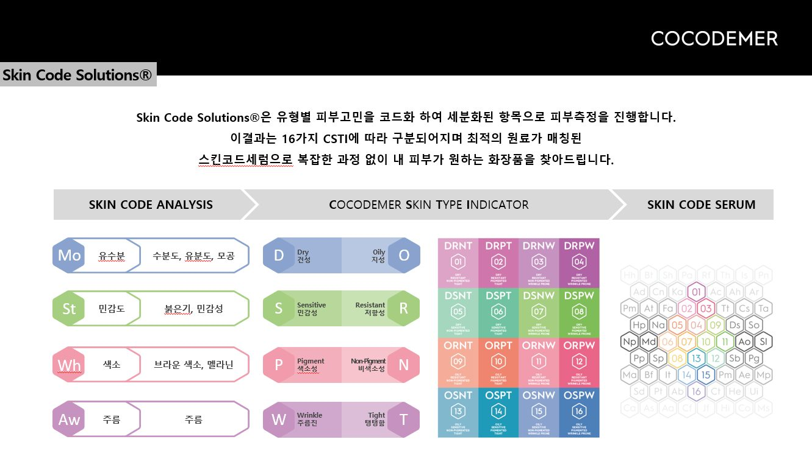

TECHNOLOGY
Reset · Boost · Keep
하나의 흐름으로 작동하는 세 단계
코코드메르의 기술은 개별 제품이 아니라 순서에 설계되어 있습니다. 피부를 정돈하는 단계(Reset), 유효 성분을 전달하는 단계(Boost), 그 상태를 유지하는 단계(Keep) 각각에 전용 기술을 두었습니다.
노폐물과 각질을 정돈해 다음 단계가 고르게 작동할 바탕을 만듭니다.
- Antipol-HiP™미세먼지 흡착 · 보호막 형성
- VelvetiPeel™산·물리적 자극 없는 각질 정돈
올려 둔 컨디션을 가두고 오래 유지시켜 시스템을 완성합니다.
- Keep System장벽 지지 · 수분 유지 복합
피부 굴곡에 밀착하는 버블 제형 기술
현재 판매 중인 아쿠아 퀵버블 마스크에 적용된 제형 기술입니다. 액체 상태보다 표면적이 넓은 미세 버블 입자가 피부 접촉 면적을 넓혀, 유효 성분이 겉돌지 않고 흡수되도록 돕습니다.

Micro-Bubble Delivery — 조밀한 미세 버블이 피부 굴곡 사이사이에 밀착해 수분과 유효 성분을 빠르고 균일하게 전달합니다.
No-Rinse Formula — 씻어내는 과정 없이 그대로 흡수시키는 제형으로, 루틴을 방해하지 않으면서 끈적임 없는 마무리감을 남깁니다.
Daily Capacity — 80ml 대용량으로 약 100회 이상 사용할 수 있어, 매일 반복하는 루틴 안에서 쓰이도록 설계되었습니다.
아쿠아 퀵버블 마스크 보기* 상기 내용은 원료적 특성 및 제형 기술에 대한 설명입니다.
개발 중인 단계별 기술
Reset과 Keep 단계의 기술입니다. 적용 제품이 출시되는 시점에 시험 데이터와 함께 공개합니다. 샘플 · 상세 자료는 B2B 문의를 이용해 주십시오.
미세먼지를 흡착하고 피부 표면에 보호막을 형성해, 외부 오염 물질로부터 피부를 방어하는 방향으로 설계된 복합 원료입니다.
PHA를 함께 써 AHA 대비 큰 분자량으로 천천히 흡수되도록 하여, 묵은 각질과 노폐물을 부드럽게 정돈합니다.
강한 산(Acid)이나 물리적 마찰이 아닌, 각질형성세포의 성장·분화 조절을 통해 각질을 정돈하는 접근 방식입니다.
100kDa 이하의 저분자 Rice HA를 함께 설계해, 피부 표면을 깎아내는 방식 대신 본연의 턴오버 리듬을 따라가도록 합니다.
앞 단계에서 올려둔 유효 성분이 증발하지 않도록 가두는 마무리 기술입니다.
글루코실 세라마이드 계열과 식물성 보호막, 수분 결합력이 높은 보습 소재, 쌀 유래 DNA 성분을 묶어 장벽을 지지하는 방향으로 구성했습니다.
브랜드가 출발한 자리
세이셸의 코코 드 메르(Coco-de-Mer)는 유네스코 자연유산으로 보호되는 희소 식물입니다. 코코드메르는 이 식물에서 브랜드 이름과 성분 설계의 출발점을 가져왔습니다.

코코넛수 — 천연 아미노산이 풍부한 Coco-de-Mer를 모방한 성분입니다.
피토스테롤 — 식물이 상처를 스스로 치유하기 위해 생성되는 성분입니다.
아미노산 20종 · 허니 — 탄탄한 피부 바탕을 만들어 줍니다.
전달 기술 — 피부 친화적 지질 멤브레인 연구와 난용성 물질의 가용화 기술을 결합했습니다.
※ 기존 라인업에 적용된 기술입니다. 해당 제품은 현재 판매되지 않으며, 처방 기록은 보관되어 있습니다.
16가지 피부 타입, 16가지 처방
CSTI(COCODEMER Skin Type Indicator)는 건성/지성, 민감/저항, 색소/비색소, 주름/탄력의 네 축으로 피부를 16가지 타입으로 구분합니다. 맞춤형 화장품 사업 시기에 구축한 처방 체계로, 현재는 OEM · 라인 설계 논의에 활용합니다.

네 가지 처방 축
Moisturizing — 수분 증발 차단, 피부장벽 강화, 피부결 개선
Whitening — 항산화, 색소침착 케어
Anti Wrinkles — 주름개선, 탄력 케어
Sensitive — 트러블 예방, 흔적 완화
지난 라인업 보기